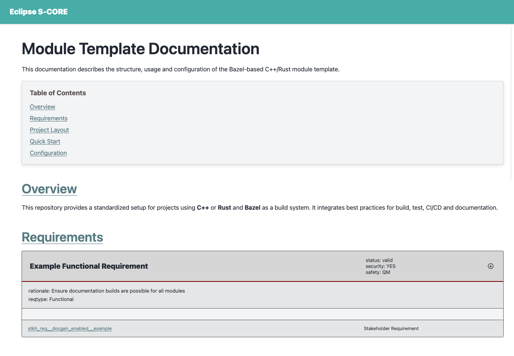

Documentation generation#
Introduction#
As described in the Overview of technologies chapter, Eclipse S-CORE uses the sphinx and sphinx-needs toolchain to generate documentation from rst files. Elements of Eclipse S-CORE metamodel are represented as sphinx-needs objects.
The integration of sphinx, sphinx-needs, and the Eclipse S-CORE-specific extensions is implemented in the repository:
The following documentation provides a description of how the documentation can be created and built. Here, we will focus on a simple example.
Defining a Bazel Documentation Target#
To generate HTML documentation from .rst files, S-CORE provides a dedicated Bazel rule. In the top-level BUILD file of your module, you should already find:
1docs(
2 source_dir = "docs",
3)
The bazel rule docs needs source_dir as an input parameter. This directory will be given to the sphinx/sphinx-needs toolchain, which will use this directory as source directory and will generate the html documentation based on the files located in the source directory. Sphinx toolchain will not rely here on any bazel dependencies, but will use its own mechanism to decide which files should be included for documentation generation. This is well described in toctree chapter of its documentation.
Sphinx configuration#
Two files are essential for documentation generation:
docs/conf.py provides configuration for the sphinx-toolchain.
1project = "Module Template Project" 2project_url = "https://eclipse-score.github.io/module_template/" 3project_prefix = "SCRAMPLE_" 4author = "Eclipse S-CORE" 5version = "0.1" 6 7# -- General configuration --------------------------------------------------- 8# https://www.sphinx-doc.org/en/master/usage/configuration.html#general-configuration 9 10 11extensions = [ 12 "sphinx_design", 13 "sphinx_needs", 14 "sphinxcontrib.plantuml", 15 "score_plantuml", 16 "score_metamodel", 17 "score_draw_uml_funcs", 18 "score_source_code_linker", 19 "score_layout", 20]
Notes:
project_prefix (e.g., “SCRAMPLE_”) is important. Other modules will use this prefix when referencing sphinx-needs elements from your module.
S-CORE extensions (score_*) are automatically provided via score_docs_as_code.
index.rst is the main entry point for your documentation. It includes all other .rst files, that should be part of the documentation build.
Building documentation#
Run the following command to validate the documentation setup:
% bazel build //:docs
The first execution running the bazel command may take longer, because bazel needs to download toolchains and dependencies. Subsequent runs will be much faster. The command we’ve called will check the consistency of your documentation for errors, but will not generate any html files. To do so, run following command
% bazel run //:docs
Running Sphinx v8.2.3
loading translations [en]... done
DEBUG: Found 0 need references in 0.00 seconds
calculate directory_hash = e3b0c44298fc1c149afbf4c8996fb92427ae41e4649b934ca495991b7852b855 within 0.00019431114196777344 seconds.
loading pickled environment... The configuration has changed (7 options: 'html_permalinks_icon', 'html_static_path', 'needs_layouts', 'needs_types', 'plantuml', ...)
done
building [mo]: targets for 0 po files that are out of date
writing output...
building [html]: build_info mismatch, copying .buildinfo to .buildinfo.bak
building [html]: targets for 1 source files that are out of date
updating environment: [config changed ('skip_rescanning_via_source_code_linker')] 1 added, 0 changed, 0 removed
reading sources... [100%] index
Copying static files for sphinx-data-viewer support
Copying static files for sphinx-needs datatables support
Copying static style files for sphinx-needs
looking for now-outdated files... none found
pickling environment... done
checking consistency... done
preparing documents... done
copying assets...
copying static files...
Writing evaluated template result to /home/_dev/scrample/_build/_static/basic.css
Writing evaluated template result to /home/_dev/scrample/_build/_static/language_data.js
Writing evaluated template result to /home/_dev/scrample/_build/_static/documentation_options.js
copying static files: done
copying extra files...
copying extra files: done
copying assets: done
generating indices... genindex done
writing additional pages... search done
dumping search index in English (code: en)... done
dumping object inventory... done
Needs successfully exported
build succeeded.
The HTML pages are in ../../../../../../../../../../../_dev/scrample/_build.
After a successful build, the html files can be copied somewhere and opened in a web browser.
When working on the documentation, it is helpful to see the current status directly in the web browser. One option is to use the live preview feature. The corresponding bazel target is automatically imported when you import doc bazel rule into your BUILD file.
load("@score_docs_as_code//:docs.bzl", "docs")
Run the following command:
% bazel run //:live_preview
...
Needs successfully exported
build succeeded.
The HTML pages are in ../../../../../../../../../../../_dev/playground_2/scrample/_build.
[sphinx-autobuild] Serving on http://127.0.0.1:8000
[sphinx-autobuild] Waiting to detect changes...
As you can see, a local server is started on following port and address: http://127.0.0.1:8000 . Open it in your web browser and you should be able to view the current version of the documentation.
{kind=link}

The live preview:
rebuilds automatically
updates on every file change
stays active until you stop the bazel process (Ctrl+C).
Now you can replace the placeholder content in index.rst with meaningful text, as shown in the following commit.